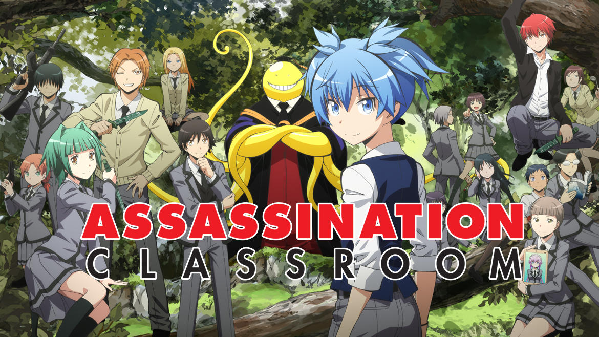

Les Animes
Hunter X Hunter

Gon Freecss est un jeune garçon de 12 ans et habite avec sa grand-mère et sa tante. Un jour, il apprend que son père qu’il n’a jamais connu, est l’un des plus grands Hunter parmi l’élite. Les hunters sont des aventuriers qui peuvent être chasseurs de prime, cuisiniers, archéologues ou encore justiciers… Gon décide alors de devenir Hunter en se rendant à l’examen de Hunter pour partir ensuite retrouver son père. Cet examen a lieu une fois par an et est réputé pour son niveau élevé de difficulté et les risques qu’il comporte. On raconte que sur dix mille candidats, un seul parvient à décrocher le certificat de Hunter. Certains y laissent même leur vie…
Assasination classroom

Un monstre à détruit 70% de la lune. Il prévoit de détruire la terre l'année suivante en mars. Mais en attendant ce jour il souhaite devenir... PROF. Le gouvernement qui le surveille lui donne le droit de devenir prof. Il se retrouve en 3ème E du collège Kunugigaoka. Aussi nommé la classe des épaves. Au départ c'est sur Nagisa Shiota qui vient d'intègre la classe E que ce porte l'intention du mangas. Au fur et à mesure de l'avancement de l'histoire nous allons suivre les autre membres de la classe. C'est une classe d'assassin dont la tâche est de tuer leur prof (le monstre ayant détruit 70% de la lune) il gagneront 10 millard de yen s'il parviennent à le tuer. Il ont pour le tuer des poignard et des fusils spéciaux qui ne blesse que leurs prof. Les élève sont entraîne au art du combat et surveillé par Karasuma.
One Punsh-Man

Adapté d’un manga, lui-même tiré du webcomic éponyme, l’anime One-Punch Man à la thématique Shônen fait son entrée sur ADN, le site de streaming 100% anime. Elle vous permet de suivre les aventures de Saitama, super-héros capable d’annihiler toute menace d’un seul coup de poing. Malheureusement pour lui, il devient si puissant qu’il peut battre n’importe quel adversaire en un seul coup. Totalement blasé, Saitama alias One-Punch Man devient même l’ennemi à abattre pour tous combattants qui veulent se faire un nom et Saitama doit donc faire face à de nouveaux ennemis tous les jours. Cela pose la question de savoir combien de temps cela pourrait-il encore durer ?